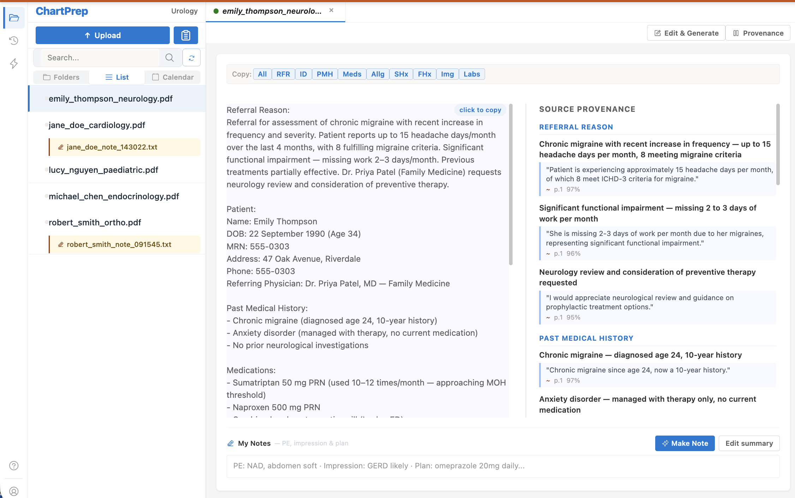
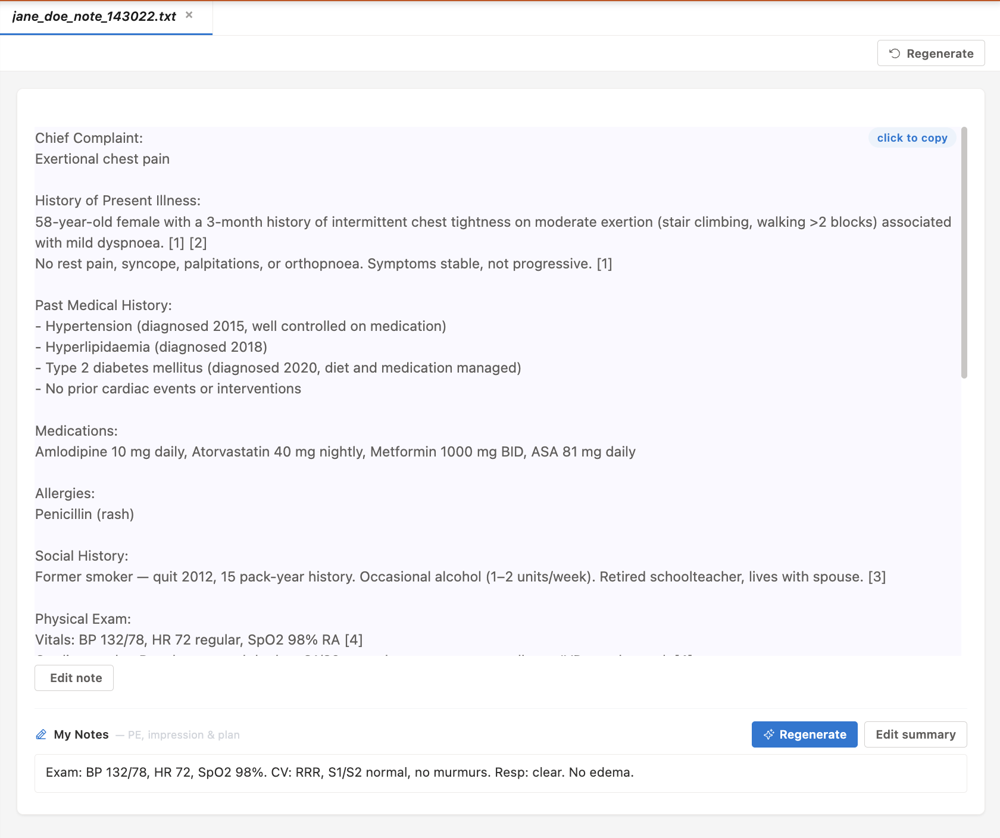
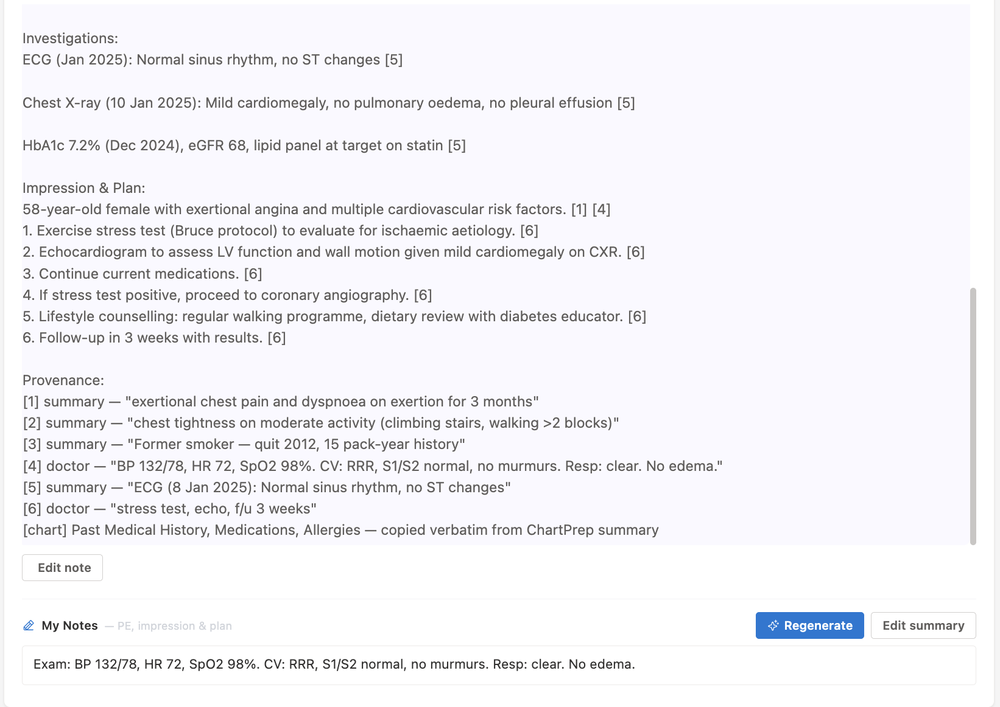

One product, three jobs: turning paper referrals into structured summaries, helping doctors write notes with citations to the source, and expanding short seed notes into a full clinical note. Each one carries the same rule: if a fact can't be tied back to a source, it doesn't make it into the output.
We didn't want to ship one tool for referrals, a second for note writing, and a third for dictation. They're all the same kind of problem: turn something a doctor has into something a doctor can use, without losing or inventing anything along the way. ChartPrep does each by checking the same rule before any sentence reaches the page.
Faxed or scanned PDF referrals turned into structured clinical summaries. Every extracted fact points back to where in the source it came from. Anything the system can't anchor isn't included.
The doctor adds their own notes and gets a finished clinical note. Each
sentence shows a small [1] pointing at its source — the
summary, the doctor's additions, or the chart itself. The markers strip
off when you paste into the EMR.
The doctor types a brief seed; the system expands it into the full structure of a clinical note. Anything not in the seed doesn't make it into the expansion.
Inline source markers ([1] [2] [3]) point at the exact span
in the input that produced each statement. The Source Provenance panel
on the right lets a doctor verify with one glance — and the markers strip
off automatically when the note is copied to the EMR.



Most clinical AI today produces a fluent note that's sometimes missing things, sometimes inventing things, in a way the doctor can only catch by comparing the note to the source. That's the re-read problem.
ChartPrep doesn't try to make the model smarter. It changes what the model is allowed to write. A doctor checking the output asks one question: "Does this sentence have an anchor I can verify?" If yes, it's grounded. If no, the system wouldn't have written it.
ChartPrep has processed over 3,000 referrals in daily clinical practice. A prospective accuracy audit of 50 referrals (785 individual statements) showed a ~0.64% error rate, with zero fabrications observed in the audited subset. For context, published benchmarks for prompt-engineered approaches sit around 1–3% hallucination and 3.45% omission (Asgari et al., npj Digital Medicine, 2025) — though tasks and denominators differ, so this is not a direct comparison.
A 2026 VA evaluation of eleven AI scribe tools (Reddy et al., Annals of Internal Medicine) found AI-generated notes scored lower than human notes across all ten PDQI-9 quality measures — the worst gaps in thorough, organized, and useful. The authors flagged real safety risk when these tools are used without careful oversight.
Histories that read "too good," physical exam findings dropped despite being stated aloud, vitals missing. Time savings are real — but so is the re-reading.
About 1.5% hallucination and 3.5% omission across 18 prompt-engineering experiments in the recent literature. Chain-of-thought made it worse, not better.
The system can't produce a sentence it can't anchor. Checking output is a glance at the anchors instead of a full re-read of the prose.
The doctor's seed is the source of truth. The system can't drop or invent what the doctor chose to say.
Built for Canadian clinics, with the privacy framework that actually applies here.
End-to-end encryption in transit and at rest, aligned with PHIPA (Ontario) and applicable provincial health-privacy law.
Stored and processed within Canadian infrastructure. No data leaves the country.
Your clinic's data is never used to train AI models, and it isn't shared with third parties.
Anchoring a sentence to its source doesn't make the source correct. A faithful summary of a vague referral is still a summary of a vague referral. The tool reduces what reading costs — it doesn't read for you.
The model underneath is still a model. The approach works by constraining what gets written, not by understanding why.
If you're a clinic interested in pilot access, an investor curious about how this actually works, or a researcher working on the same problems — write to us.